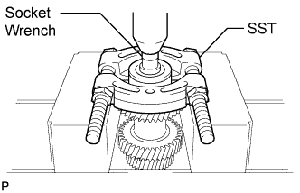

COUNTER GEAR AND REVERSE IDLER GEAR > DISASSEMBLY |
| 1. REMOVE FRONT NO. 1 COUNTER GEAR BEARING SNAP RING |
 |
Using a snap ring expander, remove the snap ring from the counter gear.
| 2. REMOVE FRONT COUNTER GEAR BEARING OR ROLLER |
 |
Using SST, a press and socket wrench, remove the front counter gear bearing or roller from the counter gear.
Remove the side race.